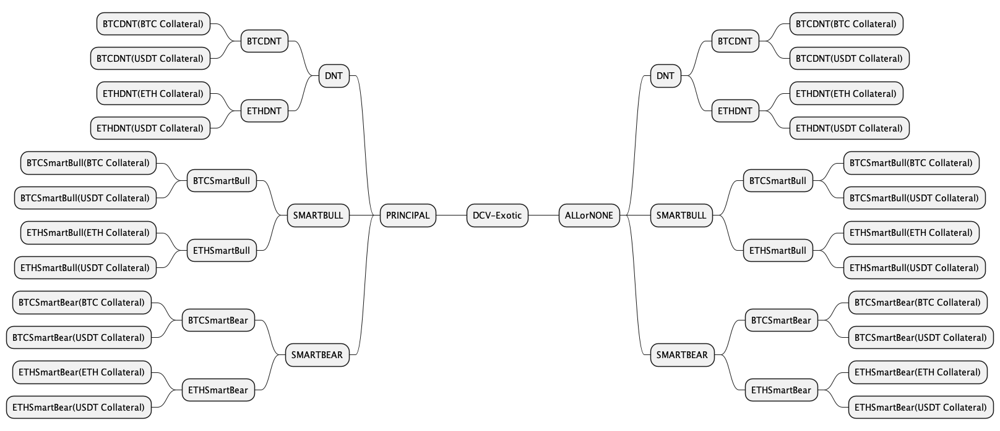
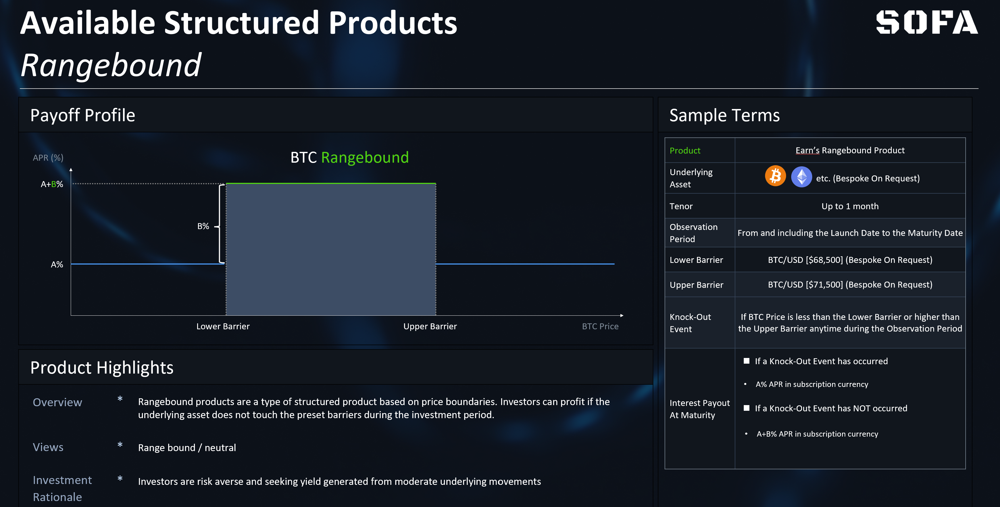
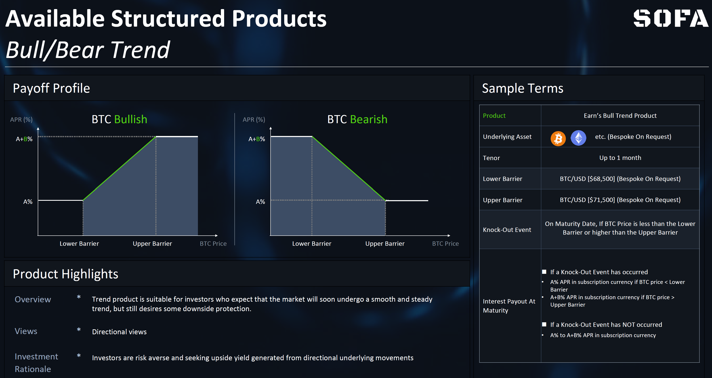
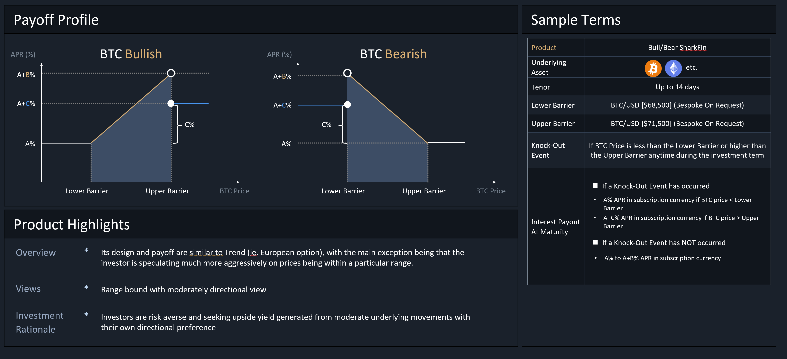

تصنيف الخزنة
تستخدم عقدة الخزنة معيار ERC-1155 لدعم قابلية تداول رموز المراكز ذات نفس سعر التنفيذ ووقت الانتهاء. ستحتوي الرموز ذات أسعار التنفيذ المختلفة أو أوقات الانتهاء المختلفة على معرفات رموز مختلفة (أي مثل NFT) بينما لا تزال محتواة تحت نفس عقد الخزنة.
تم تصميم بروتوكول SOFA بمرونة لدعم أي نوع من المنتجات الهيكلية و denominated collateral، على الرغم من أنه سيتم التمييز بين ما إذا كان المنتج الأساسي يحتوي على ميزة "حماية رأس المال" أم لا. وبالتالي، فإن تصاميم خزنتنا مقسمة إلى فئتين رئيسيتين، ذاتية التفسير، تُسمى "كسب" و "زيادة".
مثال على تصنيف الخزنة عند إطلاق SOFA

المنتجات المتاحة عند الإطلاق
كإثبات مفهوم أولي، سنركز في البداية على ثلاثة هياكل منتجات شائعة تُسمى "محدودة النطاق" و "اتجاه". علاوة على ذلك، تتوفر جميع هذه المنتجات إما في بروتوكولات كسب أو زيادة. بالإضافة إلى ذلك، سيتم إضافة أنواع منتجات إضافية باستمرار بناءً على طلب المستخدم وتعليقات النظام البيئي.
منتجات محدودة النطاق
نظرة عامة على المنتج
تعتبر المنتجات المحدودة النطاق نوعًا من المنتجات الهيكلية المعتمدة على حدود الأسعار. يمكن للمودعين تحقيق الربح إذا لم يلمس الأصل الأساسي الحواجز المحددة مسبقًا خلال فترة المراقبة قبل الاستحقاق. هذه المنتجات مناسبة للمستخدمين الذين يتوقعون أن يبقى السوق في مرحلة توطيد جانبية مع تقلبات منخفضة.
بالإشارة إلى مخطط العائد أدناه، يعتقد المستخدم أن BTC سيبقى محصورًا بين نطاق محدد بواسطة الحواجز السفلية والعلوية، لكنه لا يريد تكبد خسائر كبيرة حتى لو ثبت أن وجهة نظره خاطئة. ستضمن منتج محدودة النطاق للمستخدم حد أدنى من العائد الأساسي قدره (A) حتى لو انكسر سعر النطاق من أي جانب، ولكن سيكون للمستخدم الحق في عائد ربح إضافي يعادل (A+B) إذا بقيت الأسعار محصورة ضمن الحواجز.
بالنسبة لخيارات التخصيص، يمكن للمستخدم تعديل عرض نطاق السعر، مما سيؤدي إلى ملف تعريف مختلف من الأرباح الأساسية والأرباح الإضافية اعتمادًا على المستويات المختارة. من الطبيعي أن يمثل تحديد نطاق سعر أكثر ضيقًا رهانًا أكثر عدوانية على تقلبات منخفضة، مما يؤدي إلى عوائد أعلى. على العكس، سيؤدي نطاق السعر الأوسع إلى تقليل الأرباح الزائدة مقابل زيادة احتمالية الفوز. أخيرًا، لتسهيل الإدارة، يمكن تحديد المنتج ليتم "إعادة تدويره" تلقائيًا عند الاستحقاق كرهان استمرارية في ترقية بروتوكول لاحقة. (سيتم طرح وظيفة "إعادة التدوير" في المرحلة التالية من الترقية).

منتجات الاتجاه
نظرة عامة على المنتج
منتج الاتجاه مناسب للمودعين الذين يتوقعون أن السوق سيشهد قريبًا اتجاهًا سلسًا وثابتًا، ولكنهم لا يزالون يرغبون في بعض الحماية من الخسائر. من خلال تحديد كل من الحواجز السعرية السفلية والعلوية، سيبدأ المستخدمون في تحقيق مكاسب الدخل بمجرد أن يتجاوز الأداة الأساسية العتبة السعرية الأولية، مع زيادة المدفوعات حتى نصل إلى الحد الأقصى عند الحاجز الثاني.
علاوة على ذلك، على عكس منتج محدودة النطاق، يراقب منتج الاتجاه فقط في وقت التسوية ما إذا كان سعر الأصل الأساسي يقع ضمن النطاق المحدد لتحديد الربح النهائي (أي خيار أوروبي). هذا المنتج متاح عبر تعبيرات صاعدة وهبوطية.
كمثال، إذا كان المستخدم متفائلًا بشأن BTC ويتوقع أنه في الأيام السبعة المقبلة، سيبقى سعر BTC فوق 68,500 دولار ولكنه لن يتجاوز 71,500 دولار، يمكنه اختيار شراء منتج اتجاه صاعد، مع تحديد 68,500 دولار كحد أدنى و71,500 دولار كحد أقصى لنطاق الربح. بالإشارة إلى المخطط أدناه، في وقت التسوية، سيكون المستخدم مؤهلاً للحصول على مدفوعات تتراوح بين الربح الأساسي (A) وحد أقصى (A+B)، اعتمادًا على ما هو سعر BTC في ذلك الوقت.

السيناريوهات القابلة للتطبيق
المنتج قد يكون مناسبًا للمودعين الذين يعتقدون أن الأصل سيشهد رد فعل قوي على حدث اقتصادي معين، ولكنهم أيضًا قلقون بشأن خطر انخفاض السعر إذا كانوا مخطئين في توقعاتهم السوقية.
على سبيل المثال، قد يرغب المستخدم في المضاربة على أسعار BTC في قرار FOMC القادم، أو حدث النصف، أو إعلان الموافقة على ETF القادم. هذه الاستراتيجية مناسبة للمستخدمين الذين يحملون قناعة قوية في السوق بشأن هذه الأحداث المهمة ولكنها محفوفة بالمخاطر، ويريدون أن يظلوا منضبطين في إدارة خسائر الجانب السلبي إذا اتضح أن وجهة نظرهم كانت خاطئة.
زعنفة القرش (لوقت لاحق)
نظرة عامة على المنتج
مقارنةً بمنتجات النطاق الثابت والاتجاه، فإن منتج "زعنفة القرش" معروف نسبيًا في أسواق TradFi بفضل اسمه المميز. تصميمه وعائده مشابهان لمنتج الاتجاه (أي الخيار الأوروبي)، مع الاستثناء الرئيسي وهو أن المودع يتكهن بشكل أكثر عدوانية على الأسعار التي تكون ضمن نطاق معين.
بعبارة أخرى، منتج زعنفة القرش يتبنى وجهة نظر أكثر تحفظًا بشأن تقلبات السوق من خلال التضحية بمزيد من الارتفاع في حركة السوق الكبيرة، مقابل تحقيق أرباح أكثر عدوانية ضمن الحدود السعرية السفلية.
كمثال، لنفترض أن المستخدم متفائل بشأن BTC، لكنه يحمل قناعة قوية بأنه لن يتجاوز حدًا أعلى معينًا عند مستوى مقاومة فني قوي. في مثل هذا السيناريو، يمكن للمستخدم اختيار شراء منتج زعنفة القرش الصعودية مع ملف عائد كما هو موضح في الرسم البياني أدناه. عند تسوية المنتج، سيحصل المستخدم على عائد يتراوح من (A) إلى (A+B) اعتمادًا على مكان وجود BTC الفوري؛ ومع ذلك، على عكس منتجات الاتجاه، لاحظ أن العائد ينخفض إلى (A+C) عند تجاوز حاجز السعر العلوي، مما يقدم تعويضًا مقابل تحقيق أرباح أكثر عدوانية في النطاق السابق.
